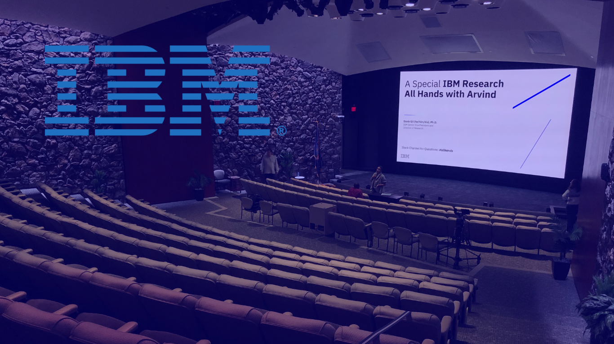
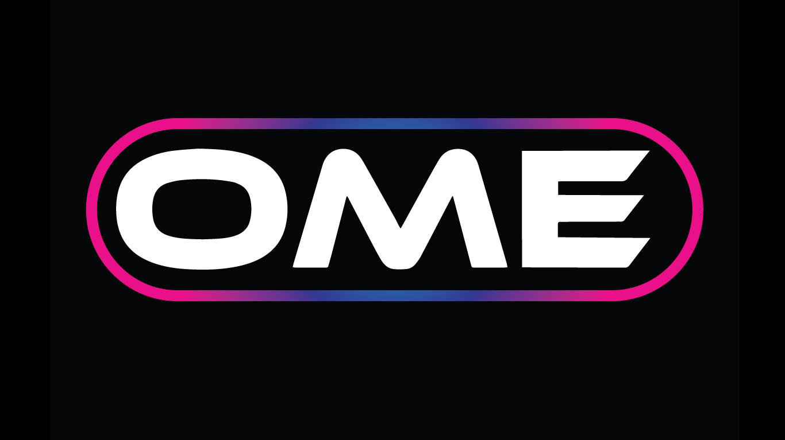
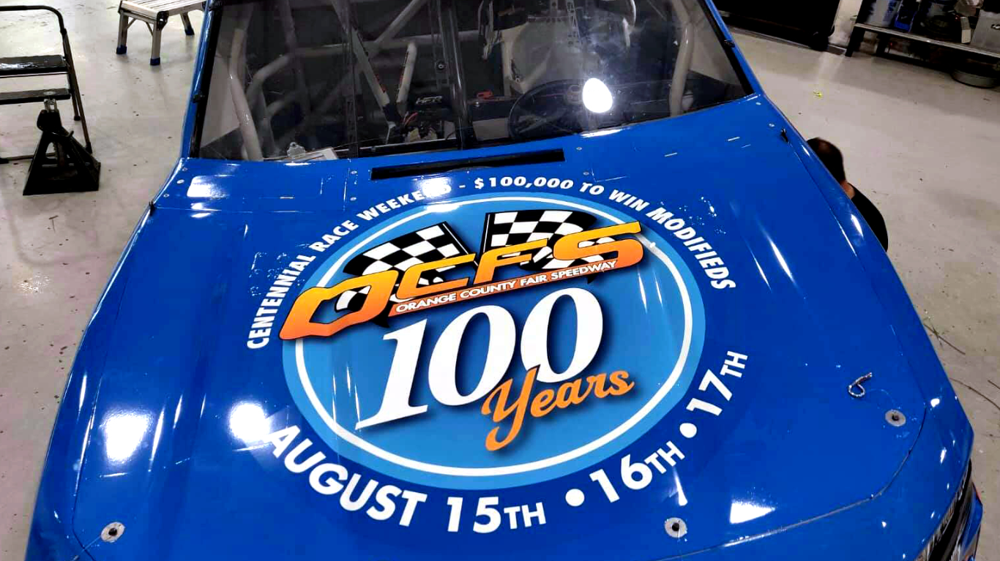
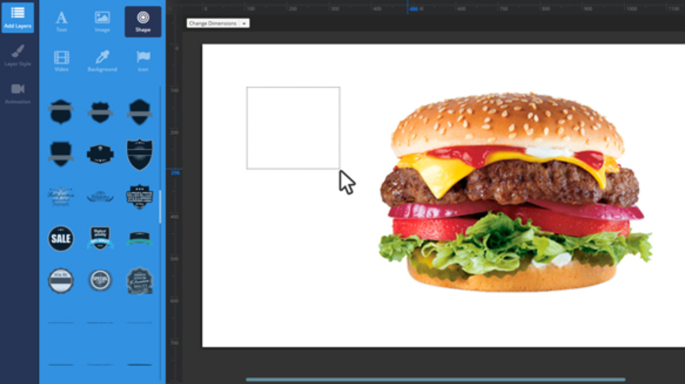
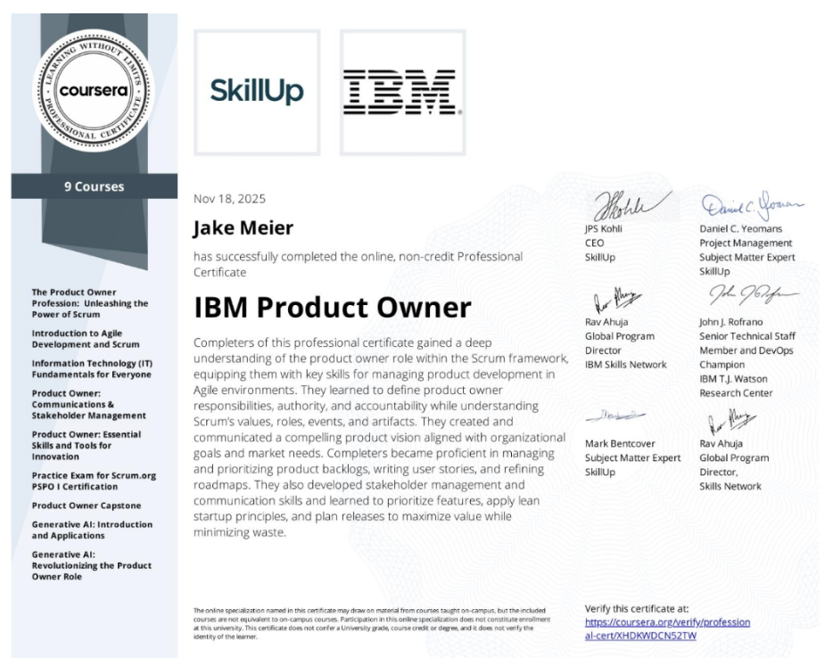
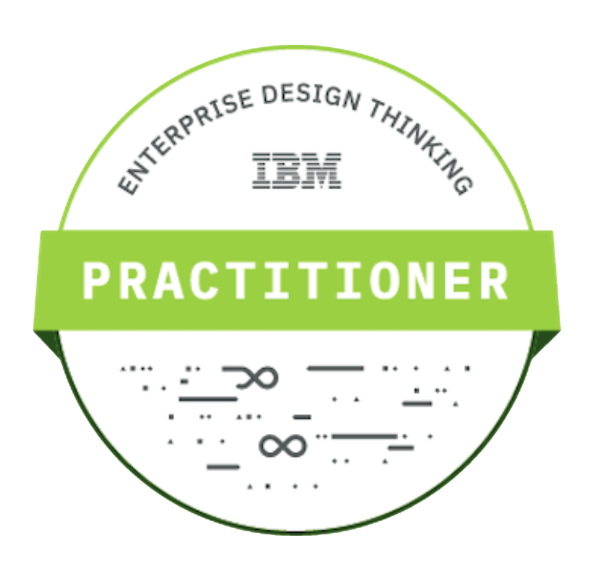
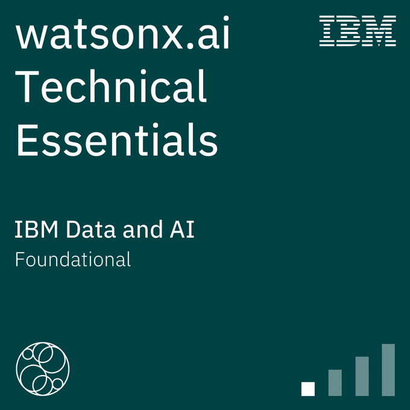
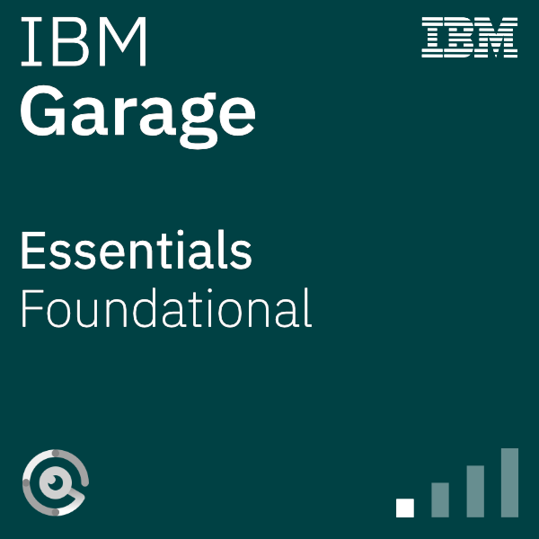
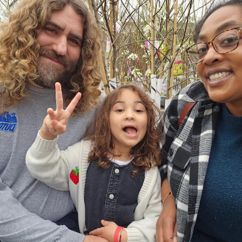

Work
Video Broadcast Event Specialist at IBM
At IBM, I served as Technical Owner for global video broadcast and conferencing tools, where I successfully deployed and sunset multiple SaaS applications for approximately 350,000 users. I was a highly recognized team member, receiving quarterly awards and consistently exceeding annual training requirements. My creative and technical contributions included designing and installing conferencing devices for executive spaces at a new flagship location, becoming a Certified Product Owner, and creating essential assets such as run-of-show templates, application feature slide decks, and infographics for hybrid conference setups.

Art Director at OME Events
At OME, I served as the creative lead for the company’s expansion into large-scale live events and concerts. I was responsible for establishing the OME brand identity from the ground up, including the development of its official website and the management of all social media and marketing campaigns. On the design side, I produced artist and management approved concert advertisements for both print and digital platforms, ensuring high-standard visual consistency. I gained significant operational experience by managing the Ticketmaster box office for concert ticket sales and creating specialized branding for diverse events such as rodeos and conventions.

Livestream Producer & Art Director at OCFS
I led a comprehensive visual and digital transformation, most notably rebranding the Orange County Fair Speedway (OCFS) for its 100th anniversary. I was responsible for creating the OCFS website, a mobile app, and a successfuly monetized YouTube channel, while also producing over 500 hours of live-broadcasted content and weekly audio podcasts. My strategic efforts drove massive social media growth, increasing Facebook followers from 6,000 to over 30,000 and Instagram from zero to 20,000+ through targeted campaigns. My marketing efforts were rewarded when I designed an award-winning multimedia trade show display.

Art Director and UI Designer at Fastrax
At Fastrax, I specialized in the intersection of software development and digital marketing for retail and wholesale tobacco markets. I was instrumental in the creation of brand identities for new product lines and package design. My technical design work included creating UI elements for digital signage software, developing layouts for digital signage displays, and producing high-quality graphic content and copy for ecommerce platforms and marketing sell sheets.

Certifications




About Me
As a creative leader with deep experience in visual storytelling and brand engagement, I specialize in transforming complex ideas into compelling narratives that resonate across diverse audiences. I drove high-impact broadcast and event experiences to over 300,000 employees at IBM. For OCFS, I produced livestreams that elevated brand identity and served audiences professional level broadcasts. I understand how design systems and brand strategy intersect with technology and I thrive at bridging those worlds to create compelling content with measurable results. I bring a proven ability to lead cross-functional teams, leveraging enterprise-scale platforms, and I can deliver on stakeholder’s needs not just today but anticipating wherever a project is headed in the future.
My Resume